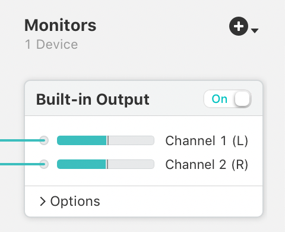
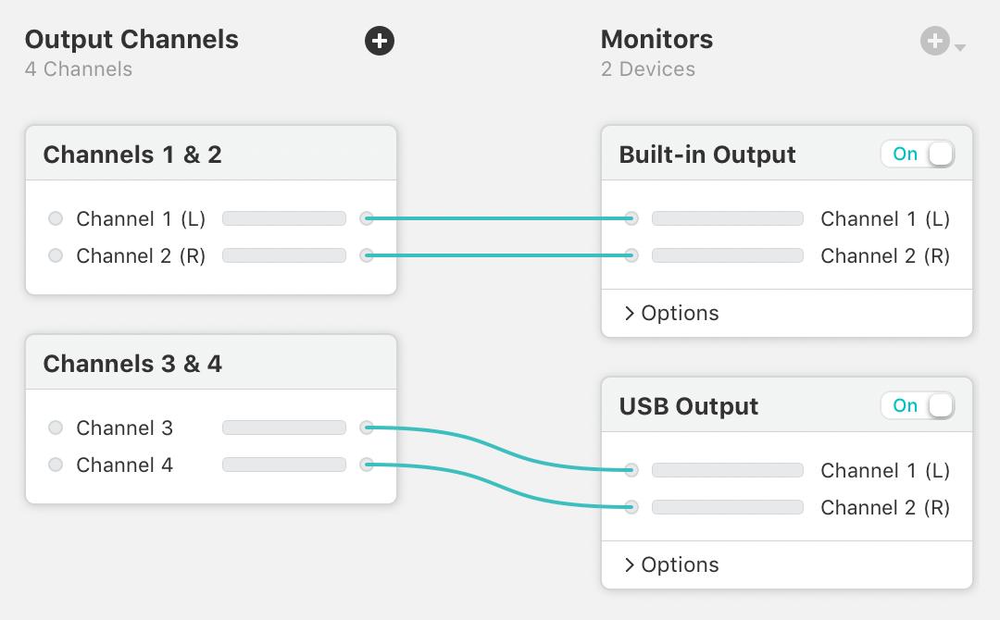
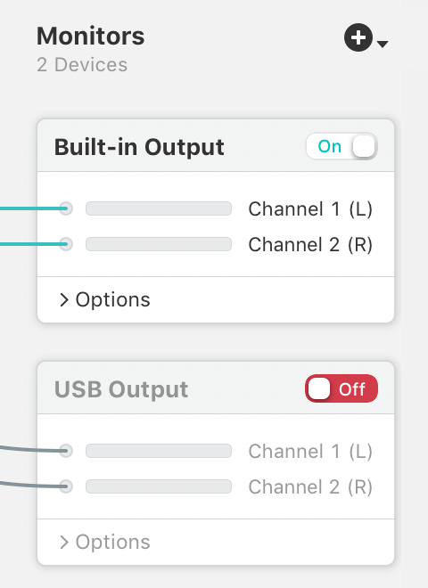
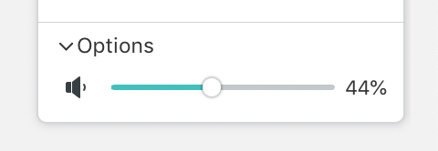

Configuring Monitors
Monitors
Using the Monitors column, you can optionally direct audio from your virtual device to play through a secondary audio device. This can be useful for monitoring how your virtual device will sound to others.
By default, Loopback's virtual audio devices do not include any monitors. To add a monitor to a virtual device, click the (+) button at the top of the Monitors column, then select an audio device.
Below, you can see that we've added a monitor called “Built-in Output”. As a result, audio from the virtual device will now be heard through the monitor device.

A monitor device in its default configuration
Manually Adjusting the Monitoring Configuration
When a new monitor is added, Loopback will automatically map output channels to it, on a one-to-one basis, as possible. Any audio produced by the source will then be included in the virtual audio device’s output.
You can also modify this wiring manually, using the same techniques described on the Output Channels page.

Manually configured monitors
Additional Settings and Notes
On/Off Toggle

The “Built-in Output” monitor is on.
The “USB Output” monitor is off.
Using the On/Off switch, you can toggle an individual monitoring device on or off, adjusting what you hear as needed.
Volume Sliders

A monitor's volume slider
Monitors offer a volume slider under their Options area, enabling you to control the volume level audio at which audio is heard.
Muted Application Sources
When a virtual device includes a monitor, it will be activated whenever ones of its sources is providing audio, even if no other application is using the device. This will in turn cause the Mute when capturing setting for application sources to apply. As a result, audio may not be heard through the Mac's default output, but would be heard through the monitor device.
Removing a Monitor
To remove a monitor from your virtual device, click on it in the editor to highlight it, then click the Delete button in the bottom bar or select Delete from the Edit menu.
Device Usage
When you've fully configured your virtual device, the Using Virtual Devices page offers more information on using it on your Mac.